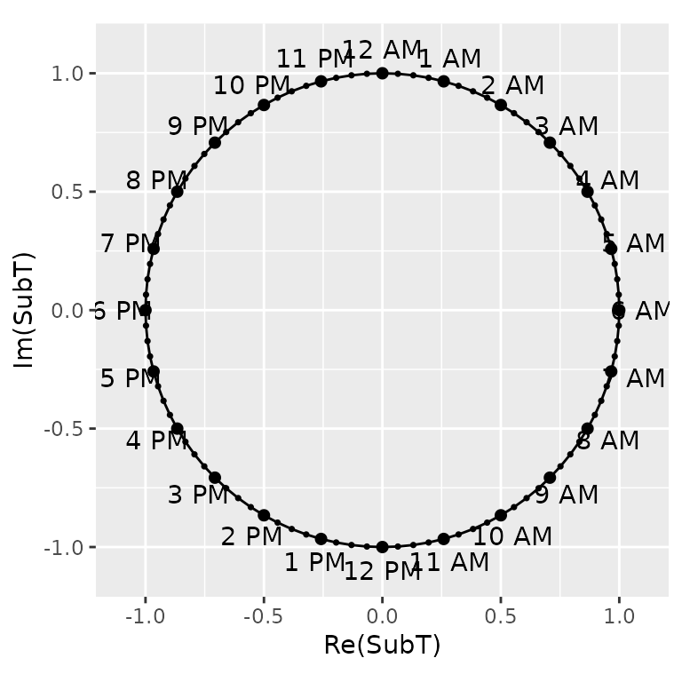
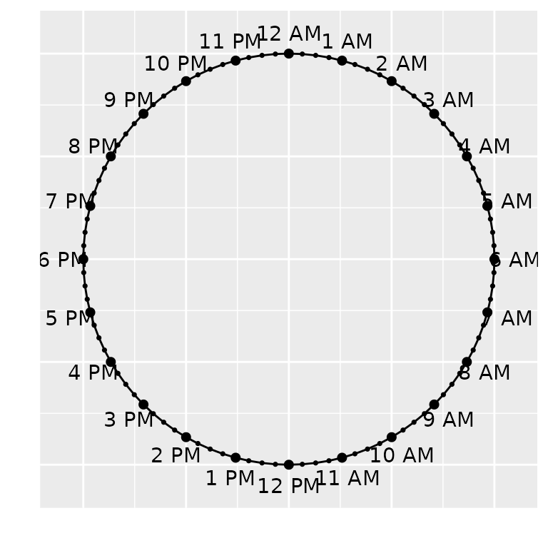

clockchart-construction
clockchart-construction.Rmd⚠ This vignette is still developing. Read with caution.
This document reveals what’s going on behind the scene–how the charts are constructed–how the idea was conceived and implemented after numerous trial and error. For the details on how to use the package, see clockplot.
⚠ The plots shown here may not produce the expected output due to the behavior of Rmarkdown. To see the actual appearance, run the codes given.
Broadly speaking, the construction of the clockcharts have two steps.
- Construction of the 24-hour clock
- Plotting event times on the clock
Each steps has two substeps:
- The mathematical idea
- The programming
The Clock Skeleton
First we need to construct the skeleton, the clock on which event times are plotted. For this, we need a circle, on which we have to mark 24 dots to denote 24 hours, starting from 00:00 (12 AM) to 23:00 (11 PM).
It is enough to draw a unit circle, although a circle of any radius
would do. In R, it is easiest to draw a circle using the
complex equation. For a unit circle, the equation is
,
where
is Euler’s number, an irrational constant having the approximate value
of 2.71828;
stands for imaginary unit, equal to
;
and
refers to the trigonometric angle in radian. To make a complete circle,
we need to allow
to take values from 0 to 360 degrees
(
in radian).
Programmatically, we need to create some angles ranging from 0 to and then connect them to make a complete circle. Let us create 100 angles and use them in the circle equation (). The trigonometric form of the equation is , while the algebraic form is . The complex form, however, is more convenient.
The Unit Circle
Here R just takes the complex numbers and plots the
values of the real part on the X axis and the corresponding values of
the imaginary part on the Y axis.
Now we have to mark the hours on the circle to make it look like a clock. We have to show 24 hours marks as well some marks for minute marks, corresponding to the fraction of the hour. This clock is slightly different from a traditional clock not only in that it has 24 hours instead of 12, but also that it has only one hand, the hour hand, with minute part added to the hour mark as the fraction; the second part, having minor contribution, is ignored.
First, let us see the output with 24 hour marks.
At this time, we move to the R package
ggplot2 to produce better graphics. We need to create an
R data frame for plotting ggplots. We also mark some points
for minutes.
First, let us create the required data frame
k <- 24 # Hours
subk <- 24*4 # Fraction of hours
times <- exp(1i * 2 * pi * (k:1) / k)
subtimes <- data.frame(SubT = exp(1i * 2 * pi * (subk:1) / subk))
ampm = c(rep(" AM",6), rep(" PM",12), rep(" AM",6))
library(tibble)
dfclock <- tibble(time = times,
hour = c(6:12, 1:12, 1:5), # May not be needed
label = paste0(c(6:12, 1:5), ampm))Explanation
k = 24 indicates there are 24 hours. Then in each hour
is divided into 4 parts , corresponding to the elapse of successive 15
minutes. Thus, a small point on @ref(fig:clock24) in the middle of two
larger point (hour) means half an hour has elapsed. For instance, the
the point in the middle of 7 PM and 8 PM is 7:30 PM.
Now the code exp(1i * 2 * pi * (k:1) / k) gives us all
the angles corresponding to 24 hours on the clock. Here, we have to note
that the angles in trigonometry starts from
(X-axis) and rotates counter-clockwise, the direction opposite to the
rotation of clock hands (the significance of the difference will be seen
shortly). But the clock moves clockwise. At 0 degree, we have 3 in a
12-hour clock and 6 in 24-hours clock.
Similarly, the code
SubT = exp(1i * 2 * pi * (subk:1) / subk) gives us the
angles corresponding to the fraction of an hour. As we have already
mentioned, the clock hand rotates clock-wise, starting from the
angle, so we name the labels 6 PM to 11 PM, then we have 12 PM to 11 PM,
followed by 12 AM to 5 AM.
The code c(rep(" AM",6), rep(" PM",12), rep(" AM",6))
ensures this sequence.
We then place the data into two data frames subtimes and
dfclock, since they are unequal dimensions.
library(ggplot2) # Load the package ggplot2
p1 <- dfclock %>% ggplot()+
geom_path(data = subtimes, aes(Re(SubT), Im(SubT)))+
# Connect Last two missing points
geom_line(data = subtimes %>% dplyr::slice(-c(2:95)), aes(Re(SubT), Im(SubT)))+
theme(aspect.ratio = 1)+
geom_text(data = dfclock, aes(Re(time)*1.1, Im(time)*1.1, label = label))+
geom_point(data = subtimes,
aes(Re(SubT), Im(SubT)), shape = 19, color = "black", size = 0.6)+
geom_point(aes(Re(time), Im(time)), color = "black", size = 1.8)
p1
Next, we plot the lines using the ggplot2 package. The
functions geom_path() does the job, while
geom_line() is used to fill the gap between the first and
the last point. aspect.ratio = 1 is set to ensure the chart
size do not depend on resizing of Rstudio Viewer size.
The points corresponding to the hours are labelled AM or PM using the
geom_text() function. We do not need the axis labels and
ticks. Let us remove them:
p1 + theme(axis.text.x=element_blank(),
axis.ticks.x=element_blank(),
axis.text.y=element_blank(),
axis.ticks.y=element_blank())+
labs(x = "", y = "")
This completes our first part of the plot; we get the skeleton of the clock.
The second and final part of the task involves plotting event times
on the appropriate points. Now, this task has several variations. In the
simplest form, we just have a chart, so called clock_chart,
which plots the event times on the 24-hour clock. An optional argument
Col can be used to change the color of the clock hands. The
other variations will be discussed later, when we complete the
discussion on how the event times are prepared for plotting.
Preparation of Event Times Data
We have data in the format HH:MM:SS. We need to convert
this data to (x,y) coordinates. In the unit circle, for
example, the 12 AM should be plotted on the Y-axis (x = 0, y = 1) and 6
AM on the X axis (x = 1, y = 0), although, to avoid plotting on the
circumference, we decrease the length a little (more on this later).
To convert the HH:MM:SS to coordinates of the unit
circle, we first separate the parts of time into HH,
MM, and SS. We accomplish that using the
dplyr and tidyr package.
# Data to check on
chkdf <- data.frame(time = c("06:00:00", "12:00:00", "17:30:00", "00:05:25"),
value = sample(10,4))
library(dplyr)
#>
#> Attaching package: 'dplyr'
#> The following objects are masked from 'package:stats':
#>
#> filter, lag
#> The following objects are masked from 'package:base':
#>
#> intersect, setdiff, setequal, union
chkdf %>% tidyr::separate_wider_delim(cols = time,
names = c("hour", "minute", "second"),
cols_remove = FALSE,
delim = ":")
#> # A tibble: 4 × 5
#> hour minute second time value
#> <chr> <chr> <chr> <chr> <int>
#> 1 06 00 00 06:00:00 7
#> 2 12 00 00 12:00:00 5
#> 3 17 30 00 17:30:00 6
#> 4 00 05 25 00:05:25 10This gives us hour, minute, and
second as character (chr) vectors, but we need
them as numeric vectors. The conversion is made with
as.numeric function.
Here the challenge now is to combine the hour and the minute into one
singe time, which we would later convert to coordinate. We intentionally
ignore the second (SS), since it has too negligible
contribution on the plot.
Here a short algorithm is to be used:
Note here that 30 minutes is equivalent to half an hour, so
1:30:00 corresponds to 1.5 hour. We need to recall that
time values range from 0 to 60, while our decimal number system gives us
the suitable range 1 to 100. In our number system, reaching 100
indicates we have completed some work, while clockworks say reaching 60
completes one cycle of the task.
The hour part does not need conversion. 23 is 23 and 22 is 22.
Thus, 15 minutes on the clock says th or work, 30 means or work, and 50 means or work have been completed.
The task is further complicated due to the clock and angles rotating in opposite directions.
////THIS CONVERSION IS A BUG//// ifelse(.dataminute * 5/30, .data$minute * 5/300) ////MAY DEPEND ON OLD TIME FORMAT HHMM hrs/////